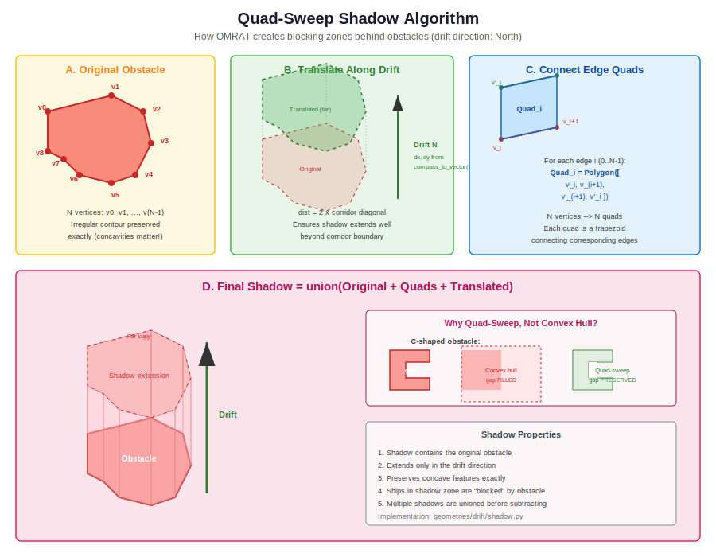
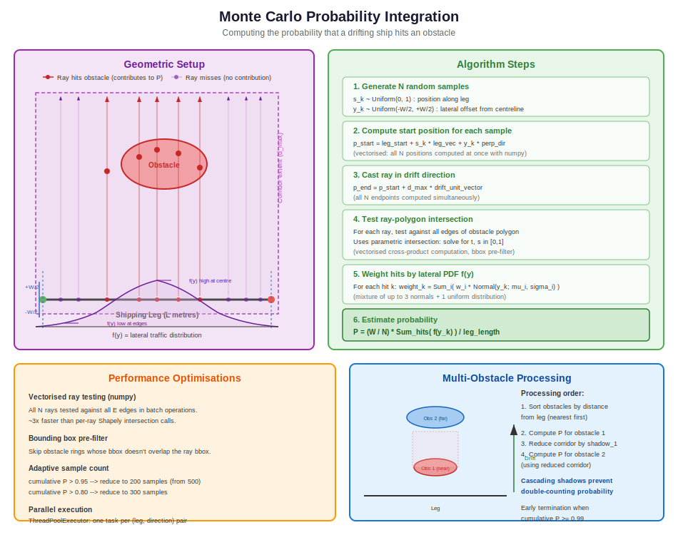

Drifting Risk Calculations¶
This chapter describes how OMRAT calculates the risk of ships that lose propulsion (blackout) and drift into obstacles such as shallow water (grounding) or structures (allision). Drifting risk is the most computationally intensive part of the risk assessment, involving geometric corridor construction, obstacle shadow modelling, and Monte Carlo probability integration.
Overview¶
When a ship suffers a blackout (engine failure), it becomes powerless and drifts under the influence of wind and current. The drifting risk calculation determines the probability that a drifting ship will reach an obstacle before:
The crew repairs the engine, or
The crew deploys the anchor (in sufficiently shallow water)
The overall drifting accident probability for a single leg is:
Where:
\(W_d\) = wind rose probability for direction \(d\)
\(P_{\text{hit},d}\) = geometric probability of hitting obstacle from direction \(d\)
\(P_{\text{repair},d}\) = probability of engine repair before reaching obstacle
\(P_{\text{anchor},d}\) = probability of successful anchoring
\(P_C\) = causation factor (1.0 for drifting – no avoidance possible without power)
The following figure shows a complete example with drift corridors in all 8 compass directions, with realistic irregular obstacles and blocking zones:

The coloured regions represent the reachable area for each wind direction after obstacle blocking has been applied. The grey rectangle at the centre is the base surface around the shipping leg, and the blue irregular shapes are depth obstacles. Notice how the corridors are clipped where they encounter obstacles, and how gaps between scattered obstacle parts remain open – ships can drift through them.
Pipeline orchestrator: compute/drifting_model.py:975 – run_drifting_model() |
Corridor generator: geometries/drift/generator.py:25 – DriftCorridorGenerator
Blackout Probability¶
The probability that a ship experiences a blackout while transiting a leg segment is modelled as a Poisson process:
Where:
\(F_b\) = blackout frequency (events per year)
\(h\) = transit time across the leg (hours)
\(h = L / V\) (leg length divided by ship speed)
compute/basic_equations.py:9 – get_drifting_prob()
Repair Time Distribution¶
The time required to repair a blackout is modelled using a lognormal distribution:
Where the parameters are:
\(\sigma\) = shape parameter (standard deviation of log)
\(\mu_{\text{loc}}\) = location parameter
\(s\) = scale parameter (
exp(mean of log))
The probability that the ship is not repaired before drifting a distance \(d\) is:
Where the drift time is \(d / V_{\text{drift}}\) converted to hours.
compute/basic_equations.py:30 – get_not_repaired() |
compute/basic_equations.py:18 – repairtime_function()
Default parameters:
std = 0.95(shape)loc = 0.2(location)scale = 0.85(scale)
Users can also define a custom repair time function using a Python expression.
Drift Corridor Generation¶
The drift corridor is the central geometric construct in OMRAT’s drifting risk model. It represents the area that ships could drift through from a given shipping leg, in a given wind direction, before their engines are repaired. The corridor must account for:
The lateral spread of ship starting positions (traffic distribution)
The maximum drift distance (from the repair time distribution)
The blocking effect of obstacles (ships cannot drift through land or structures)
The anchoring opportunity in shallow water
Building these corridors correctly is non-trivial. Real-world obstacles are irregular polygons derived from bathymetric data (GEBCO depth contours) or manually digitised structures. They can be scattered MultiPolygons with gaps, concave shapes, or overlapping features. The corridor generation must handle all of these cases while preserving geometric fidelity.
The following diagram illustrates the complete 6-step construction process:

Step 1: Base Surface¶
A rectangle is created perpendicular to the leg, representing the starting positions of ships on the leg. Its width is derived from the lateral traffic distribution:
Where \(Z_{0.995} \approx 2.576\) is the normal quantile for 99% coverage. This means the base surface captures 99% of the lateral traffic distribution. Ships outside this range are extremely unlikely and their contribution to the risk integral is negligible.
The rectangle has four corners computed from the leg’s start/end points,
extended perpendicularly by half_width in both directions:
perp_dir = [-leg_dir_y, leg_dir_x] (90-degree rotation)
B1 = start - half_width * perp_dir
B2 = start + half_width * perp_dir
B3 = end + half_width * perp_dir
B4 = end - half_width * perp_dir
geometries/drift/corridor.py:16 – create_base_surface()
coords = np.array(leg.coords)
if len(coords) < 2:
return Polygon()
start, end = coords[0], coords[-1]
leg_vec = end - start
leg_length = np.linalg.norm(leg_vec)
if leg_length == 0:
return Polygon()
# Calculate perpendicular direction
leg_dir = leg_vec / leg_length
perp_dir = np.array([-leg_dir[1], leg_dir[0]])
# Create rectangle corners
p1 = start - half_width * perp_dir
p2 = start + half_width * perp_dir
p3 = end + half_width * perp_dir
p4 = end - half_width * perp_dir
return Polygon([p1, p2, p3, p4])
Step 2: Projection Distance¶
The maximum drift distance determines how far the corridor extends. It is calculated from the repair time distribution by finding the time at which 99.9% of blackouts would have been repaired, then converting to distance:
This gives the distance at which only 0.1% of ships would still be drifting. Beyond this distance, the risk contribution is negligible. The distance is clamped to [10 km, 50 km] as a sanity bound.
For the default parameters (std=0.95, loc=0.2, scale=0.85) and a drift speed of 1.94 knots (~1 m/s), the projection distance is approximately 58 km.
geometries/drift/distribution.py:13 – get_projection_distance()
Step 3: Projected Corridor¶
The base surface is “swept” along the drift direction by the projection distance. Concretely:
Translate all four base corners by the drift vector
Create a polygon from the translated corners (the “projected surface”)
Take the convex hull of the union of base + projected surface
The drift vector is computed from the compass angle:
The convex hull ensures a single simple polygon. For cardinal directions (N, S, E, W), the result is a rectangle. For diagonal directions (NE, NW, SE, SW), it is a parallelogram.
geometries/drift/corridor.py:54 – create_projected_corridor()
Step 4: Obstacle Shadows (The Quad-Sweep Algorithm)¶
When a corridor intersects an obstacle, a shadow zone (blocking zone) is created behind the obstacle. Ships cannot drift through solid obstacles, so the area downwind of the obstacle is unreachable from the leg.
Creating accurate shadow zones is the most geometrically challenging step. The naive approach of taking the convex hull of the obstacle and its translated copy fails for concave obstacles – it fills in gaps that ships could actually drift through. This is a critical problem because real bathymetric data often produces irregular, concave depth contours.
OMRAT uses a quad-based sweep algorithm that preserves the exact contour of the obstacle:
{kind=link}
The algorithm works as follows:
Translate the obstacle along the drift direction by a large distance (twice the corridor diagonal). This creates a “far copy” that extends well beyond the corridor boundary.
Create edge quads: For each edge of the obstacle polygon (defined by consecutive vertices \(v_i\) and \(v_{i+1}\)), create a quadrilateral connecting the original edge to the corresponding translated edge:
Quad_i = Polygon([ v_i, v_(i+1), v'_(i+1), v'_i ])
An obstacle with N vertices produces N quads.
Union everything: The shadow is the union of the original obstacle, all N quads, and the translated copy.
Why quads instead of convex hull?
Consider a C-shaped obstacle (e.g., a reef with a navigable channel through the middle):
Convex hull fills the channel – ships are incorrectly blocked from drifting through the gap
Quad-sweep preserves the channel – each edge of the C-shape generates its own quad, and the interior gap remains open
This distinction is critical for real bathymetric data, where depth contours often have irregular shapes with navigable gaps between scattered shallow patches.
MultiPolygon handling: Real depth data frequently consists of multiple disconnected polygons (e.g., a reef system with several separated shoals). OMRAT handles this by:
Intersecting the obstacle with the corridor
Extracting individual polygon parts from the intersection
Creating a separate shadow for each part
Taking the union of all shadows
This ensures that gaps between obstacle parts remain open for drift.
geometries/drift/shadow.py:18 – create_obstacle_shadow() |
geometries/drift/shadow.py:96 – _create_edge_quads()
# Get coordinates for quad construction
original_coords = list(obstacle.exterior.coords)[:-1] # Exclude closing point
translated_coords = list(far_obstacle.exterior.coords)[:-1]
n = len(original_coords)
if n < 3:
# Fallback for degenerate obstacles
return unary_union([obstacle, far_obstacle]).convex_hull
# Create quads connecting each edge of original to corresponding edge of translated
quads = _create_edge_quads(original_coords, translated_coords)
# Union the original obstacle, all quads, and far obstacle
all_parts = [obstacle, far_obstacle] + quads
shadow = unary_union(all_parts)
Step 5: Corridor Clipping¶
The corridor is clipped by subtracting all shadow zones:
Only the reachable parts of the corridor remain – areas that can be reached from the upwind edge without passing through any obstacle.
After clipping, the result may be a MultiPolygon (e.g., if an obstacle cuts the corridor in two). OMRAT applies a reachability filter: only polygon parts that touch the upwind edge of the corridor are kept. The upwind edge is the edge opposite to the drift direction – it is where ships enter the corridor.
Drift North (0°) --> upwind edge = South edge (min_y)
Drift East (270°) --> upwind edge = West edge (min_x)
Drift West (90°) --> upwind edge = East edge (max_x)
etc.
Fragments that are disconnected from the upwind edge are discarded, as no ship can reach them without passing through an obstacle first.
geometries/drift/clipping.py:16 – clip_corridor_at_obstacles()
Step 6: Anchor Zone Split¶
The clipped corridor is split into two zones based on water depth:
Anchorable zone (blue): Areas where the water depth is less than the maximum anchorable depth (\(d < d_{\text{anchor}}\)). Ships in these areas can attempt anchoring with probability \(P_{\text{anchor}}\).
Deep water zone (green): Areas too deep for anchoring. Ships must wait for engine repair.
A subtle but important rule applies: areas behind (downwind of) an anchor zone are reclassified as anchorable. The reasoning is that a ship drifting through shallow water had the opportunity to anchor there. If it continues drifting (anchor failed or not attempted), it has already passed through the anchorable region. This is implemented by creating shadow zones from the anchorable polygon parts and using them to reclassify deep-water areas behind them.
blue = corridor_clipped AND anchor_polygon
green = corridor_clipped - anchor_polygon
blue_shadows = union of shadows from each blue part
green_behind_blue = green AND blue_shadows
final_blue = blue + green_behind_blue
final_green = green - blue_shadows
geometries/drift/clipping.py:124 – split_corridor_by_anchor_zone()
Probability Integration¶
Once the drift corridors are generated, OMRAT computes the probability that a ship starting from any position on the leg will drift into each obstacle. This uses Monte Carlo integration – a numerical method well-suited to the high-dimensional, irregular geometry of the problem.
{kind=link}
Why Monte Carlo?¶
The probability integral has the form:
Where:
\(s\) = position along the leg (0 to L)
\(y\) = lateral offset from the leg centreline
\(f(y)\) = lateral traffic distribution (mixture of normals)
\(I_{\text{hit}}(s, y, d)\) = indicator function: 1 if a ship at position \((s, y)\) drifting in direction \(d\) hits the obstacle, 0 otherwise
The indicator function depends on whether a ray from the starting position, cast in the drift direction, intersects the obstacle polygon. This makes the integrand discontinuous (a step function), which is poorly suited to quadrature methods but well-suited to Monte Carlo sampling.
Analytical integration would require decomposing the obstacle boundary into segments and computing exact intersection intervals – feasible for simple rectangles, but impractical for irregular real-world polygons with dozens of vertices. Monte Carlo integration handles arbitrary polygon shapes with no special-case logic.
The Algorithm¶
For each combination of (leg, direction, obstacle):
Sample N random points \((s_k, y_k)\) where:
\(s_k \sim \text{Uniform}(0, 1)\) – position along the leg
\(y_k \sim \text{Uniform}(-W/2, +W/2)\) – lateral offset
Compute the starting position for each sample:
\[\vec{p}_0 = \vec{p}_{\text{start}} + s_k \cdot \vec{v}_{\text{leg}} + y_k \cdot \vec{n}_{\perp}\]Cast a ray in the drift direction:
\[\vec{p}_1 = \vec{p}_0 + d_{\text{max}} \cdot \hat{v}_{\text{drift}}\]Test ray-polygon intersection: Determine whether the ray from \(\vec{p}_0\) to \(\vec{p}_1\) intersects the obstacle polygon. This uses a vectorised parametric intersection test (see below).
Weight hits by the lateral PDF: For each ray that hits the obstacle, evaluate the combined lateral distribution:
\[f(y_k) = \sum_i w_i \cdot \phi\!\left(\frac{y_k - \mu_i}{\sigma_i}\right)\]Estimate the probability:
\[P \approx \frac{W}{N} \sum_{k \in \text{hits}} f(y_k)\]Where \(W = 2 \times W_{\text{half}}\) is the total lateral integration width. The result is normalised by leg length to give a per-unit-length probability.
geometries/calculate_probability_holes.py:642 – compute_probability_holes()
Vectorised Ray-Polygon Intersection¶
The ray-polygon intersection test is the innermost loop of the Monte Carlo integration and must be fast. OMRAT uses a vectorised numpy implementation that tests all N rays against all edges of the polygon simultaneously.
For a ray \(P(t) = \vec{p}_0 + t (\vec{p}_1 - \vec{p}_0)\) and an edge \(Q(s) = \vec{e}_0 + s (\vec{e}_1 - \vec{e}_0)\), intersection occurs when both \(t \in [0,1]\) and \(s \in [0,1]\). The parameters are found by solving:
Where \(\times\) denotes the 2D cross product \((a_x b_y - a_y b_x)\). The cross products for all N rays and all E edges are computed in batch using numpy array operations, yielding a ~3x speedup over per-ray Shapely intersection calls.
A bounding box pre-filter skips obstacle rings whose bounding box does not overlap the ray’s bounding box, avoiding unnecessary computation for distant obstacles.
Multi-Obstacle Cascading¶
When multiple obstacles exist, they are processed in distance order (nearest to the leg first). Each obstacle’s shadow reduces the corridor available for subsequent obstacles. This prevents double-counting: if obstacle A blocks the path to obstacle B, then B’s contribution is reduced accordingly.
corridor_remaining = full_corridor
for obstacle in sorted_by_distance_from_leg:
P[obstacle] = integrate(corridor_remaining, obstacle)
shadow = create_shadow(obstacle)
corridor_remaining = corridor_remaining - shadow
if cumulative_probability >= 0.99:
break # Early termination
This cascading model ensures that the sum of probabilities across all obstacles does not exceed 1.0. The early termination criterion avoids wasting computation on distant obstacles that contribute negligibly to the total risk.
Performance Optimisations¶
The Monte Carlo integration is the computational bottleneck of OMRAT. For a typical analysis with 10 legs, 50 obstacles, and 8 directions, the system must perform approximately 2 million ray-polygon intersection tests. Several optimisations make this feasible:
Parallel execution:
ThreadPoolExecutorwithcpu_count - 1workers processes (leg, direction) pairs concurrentlyEarly termination: Skip remaining obstacles once cumulative probability exceeds 0.99
Distance rejection: Skip obstacles too far to be reachable within the projection distance
Batch ray testing: Vectorised numpy ray-polygon intersection (~3x faster than per-ray Shapely calls)
Adaptive sampling: 500 samples for the first obstacles, reduced to 300 (cumulative P > 0.8) or 200 (cumulative P > 0.95) for later obstacles that contribute less to the total
Wind Rose Weighting¶
The probability from each of the 8 directions is weighted by the wind rose probability. The wind rose defines the fraction of time that winds blow from each direction:
Where \(W_d\) is the wind rose probability and \(\sum W_d = 1\).
The default wind rose assigns equal probability (12.5%) to all 8 directions. Users can adjust these values based on local meteorological data. In practice, the wind rose has a large impact on the final risk: if the dominant wind direction pushes ships toward an obstacle, the risk is much higher than for a wind direction that pushes ships into open water.
Final Drifting Risk¶
The complete drifting risk formula for obstacle \(j\) from leg \(i\) is:
Where:
\(Q_{ik}\) = traffic frequency for ship type \(k\) on leg \(i\) (ships/year)
All other symbols as defined above
The total drifting risk is the sum over all legs and obstacles.
Computational Complexity¶
The drift corridor pipeline has the following computational profile:
Corridor generation (per leg, per direction):
Base surface: O(1) – 4 corner points
Projection: O(1) – translation + convex hull of 8 points
Shadow creation: O(M x E) – M obstacles with E edges each
Corridor clipping: O(M x E2) – polygon difference with union of M shadows (the expensive step)
Anchor splitting: O(E) – intersection and shadow extension
Probability integration (per leg, per direction):
Per obstacle: O(N x E) – N sample rays tested against E edges
Typical: N = 500 samples, E = 10–100 edges
Total per (leg, direction): O(M x N x E)
Full analysis (L legs, M obstacles, 8 directions):
Corridor generation: O(L x 8 x M x E2) – dominated by clipping
Probability integration: O(L x 8 x M x N x E) – dominated by ray tests
For a medium-sized analysis (L=10, M=50, N=500, E=20), this amounts to ~4 million ray-edge intersection tests, which typically completes in 1–5 minutes depending on hardware. Larger analyses (L=50, M=200) may take 30 minutes or more; the QGIS Task Manager shows progress during execution.
Result Visualisation¶
Drifting risk results are visualised as QGIS vector layers:
Allision results: Line segments along structure boundaries, coloured by probability (green = low, red = high)
Grounding results: Line segments along depth contours, coloured by probability
Drift corridors: Polygon layers per leg, categorised by wind direction with transparent colour coding
Each obstacle segment’s exposure is weighted by the angle between the segment’s outward normal and the drift direction:
Where \(\theta_{\text{diff}}\) is the angular difference between the drift direction and the segment’s hit direction (normal + 180 deg).
geometries/result_layers.py – create_result_layers()